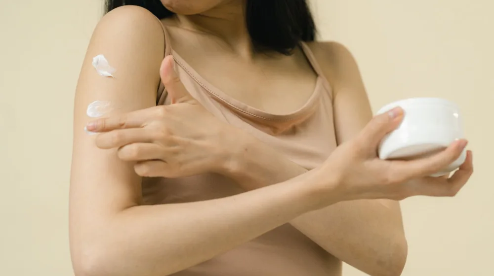

겨울철 피부 건조, 왜 나만 유독 심할까? 촉촉한 피부를 위한 관리법
사진: RDNE Stock project / Pexels (무료 이미지, 출처 표기)
겨울철 피부 건조, 왜 유독 심해질까요?

매년 겨울이 오면 유난히 피부가 당기고 가려움증까지 생기는 경험이 있으신가요? 겨울철은 낮은 기온과 건조한 공기, 실내 난방 사용 등 피부에 치명적인 환경 요인들이 복합적으로 작용하는 시기입니다. 차가운 바람은 피부 표면의 수분을 증발시키고, 난방으로 건조해진 실내 공기는 피부 속 수분까지 빼앗아 갑니다. 이로 인해 피부 장벽이 손상되면 건조함이 더욱 심해지고, 작은 자극에도 민감하게 반응하게 됩니다.
특히 2026년 8월 현재를 기준으로 볼 때, 기후 변화로 인한 극심한 기온 변화와 미세먼지 등 환경 오염 요인들도 피부 장벽 약화에 영향을 미치고 있어 더욱 각별한 관리가 필요합니다.
피부 장벽을 지키는 올바른 세안 및 생활 습관
겨울철 피부 건조 관리는 세안부터 시작됩니다. 뜨거운 물은 피부의 유분을 과도하게 제거하여 건조함을 유발하므로, 미온수로 짧게 세안하는 것이 좋습니다. 세안 후에는 수건으로 가볍게 톡톡 두드려 물기를 제거하고, 피부에 물기가 완전히 마르기 전 빠르게 보습제를 발라야 수분 증발을 막을 수 있습니다.
- 미온수 사용: 뜨거운 물 대신 체온과 비슷한 미온수로 세안합니다.
- 약산성 클렌저: 피부 장벽 보호를 위해 pH 5.5 전후의 약산성 클렌저를 사용합니다.
- 가습기 활용: 실내 습도를 50~60%로 유지하여 피부 수분 손실을 최소화합니다.
- 충분한 수분 섭취: 하루 8잔 이상의 물을 마셔 몸속부터 수분을 보충합니다.
속까지 채워주는 겨울철 보습 스킨케어 루틴
겨울철에는 단순한 보습을 넘어 피부 장벽 강화에 집중해야 합니다. 여러 단계에 걸쳐 수분을 공급하고 보호막을 형성하는 것이 중요합니다.
- 토너/부스터: 세안 후 물기를 닦자마자 보습 토너나 부스터를 사용하여 피부결을 정돈하고 다음 단계 흡수를 돕습니다. 묽은 제형을 2~3번 겹쳐 바르면 더욱 효과적입니다.
- 세럼/앰플: 히알루론산, 세라마이드 등 보습 성분이 풍부한 세럼이나 앰플을 사용하여 피부 속 깊이 수분을 공급합니다.
- 크림/로션: 유분감이 있는 보습 크림이나 로션을 충분히 발라 수분 증발을 막고 피부 장벽을 강화합니다. 건조함이 심한 부위에는 한 번 더 덧바릅니다.
- 페이스 오일 (선택): 극심한 건성 피부라면 크림 사용 후 페이스 오일을 한두 방울 섞거나 마지막 단계에 발라 보습막을 한 번 더 형성해줍니다.
내 피부 타입별 '최적의' 보습 아이템 선택 가이드
모든 피부에 똑같은 보습제가 효과적인 것은 아닙니다. 자신의 피부 타입과 건조함의 정도에 따라 적절한 제형과 성분을 선택하는 것이 중요합니다. 아래 표를 참고하여 나에게 맞는 보습제를 찾아보세요.
제품을 선택할 때는 성분표를 꼼꼼히 확인하고, 처음 사용하는 제품은 팔 안쪽 등 작은 부위에 먼저 테스트하여 알레르기 반응이 없는지 확인하는 것이 안전합니다.
오히려 피부를 망치는 겨울철 관리 '주의보'
겨울철 피부 관리에 도움이 된다고 생각했던 습관들이 오히려 피부를 망칠 수 있습니다. 다음 주의사항을 확인하고 건강한 피부를 유지하세요.
- 과도한 각질 제거: 건조한 피부에 무리한 각질 제거는 피부 장벽을 손상시켜 건조함을 악화시킬 수 있습니다. 주 1회 이하, 부드러운 제품으로 관리합니다.
- 뜨거운 물 샤워: 긴 시간 뜨거운 물로 샤워하면 피부 보호막인 유분층이 파괴되어 수분 손실이 가속화됩니다. 미지근한 물로 10분 이내로 샤워를 마칩니다.
- 알코올 성분 화장품: 알코올 성분이 함유된 토너나 화장품은 피부를 더욱 건조하게 만들 수 있으므로 피하는 것이 좋습니다.
- 실내 난방 과용: 난방 온도를 너무 높게 설정하면 실내 습도가 급격히 낮아져 피부 건조를 심화시킵니다. 적정 실내 온도(20~22℃)를 유지하고 가습기를 함께 사용합니다.
이럴 땐 전문가의 도움이 필요합니다
생활 습관 개선과 스킨케어 루틴을 조절했음에도 불구하고 피부 건조함이 개선되지 않거나, 다음과 같은 증상이 나타난다면 피부과 전문의와 상담하는 것을 권장합니다.
- 극심한 가려움증으로 수면 방해 또는 일상생활 불편
- 붉은 반점, 진물, 물집 등 염증 증상 동반
- 피부가 갈라지고 피가 나는 등 심한 손상
- 특정 보습제에 대한 반복적인 알레르기 반응
이러한 증상들은 단순한 건조함을 넘어 아토피 피부염, 접촉성 피부염 등 다른 피부 질환의 신호일 수 있기 때문에, 정확한 진단과 적절한 치료가 중요합니다. 2026년 8월 기준, 대부분의 피부과에서는 피부 건조 및 트러블에 대한 전문적인 상담과 치료를 제공하고 있습니다.
🔗 이 글도 함께 보면 좋아요: 장보기 전 필수 체크! 식비 20% 아끼는 똑똑한 쇼핑 가이드
관련 추천 상품
겨울 보습 크림, 건성 피부 오일, 세라마이드 로션 관련 인기 상품 보러가기
이 포스팅은 쿠팡 파트너스 활동의 일환으로, 이에 따른 일정액의 수수료를 제공받습니다.